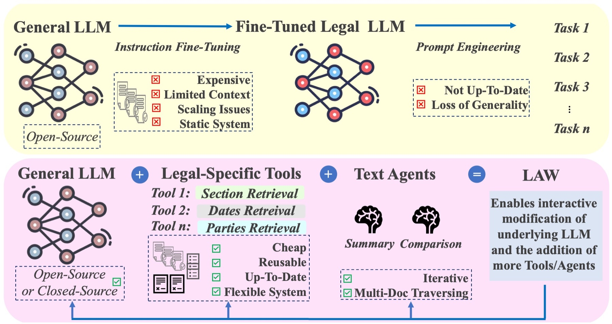
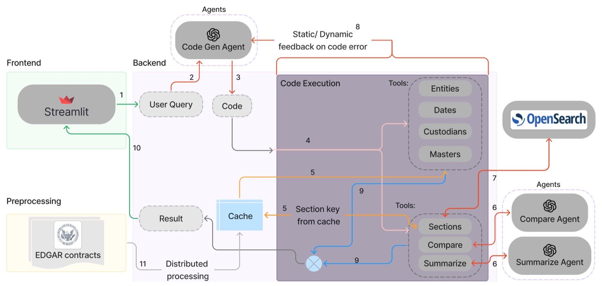

Abstract
Legal contracts in the custody and fund services domain govern critical aspects such as key provider responsibilities, fee schedules, and indemnification rights. However, it is challenging for an off-the-shelf Large Language Model (LLM) to ingest these contracts due to the lengthy unstructured streams of text, limited LLM context windows, and complex legal jargon. To address these challenges, we introduce LAW (Legal Agentic Workflows for Custody and Fund Services Contracts). LAW features a modular design that responds to user queries by orchestrating a suite of domain-specific tools and text agents. Our experiments demonstrate that LAW, by integrating multiple specialized agents and tools, significantly outperforms the baseline. LAW excels particularly in complex tasks such as calculating a contract’s termination date, surpassing the baseline by 92.9% points. Furthermore, LAW offers a cost-effective alternative to traditional fine-tuned legal LLMs by leveraging reusable, domain-specific tools.
Core contributions
- 1Agents instead of fine-tuningA general LLM writes code that calls legal tools, so no legal model has to be trained.
- 2Reusable legal toolsTools for dates, parties, contract lifecycle, master agreements and section titles work across contracts.
- 3A large real corpus17,831 custody contracts from 23 years of SEC filings for all US ’40 Act funds.
- 4Long documents handledSummary and comparison agents split contracts far longer than an LLM’s context window.
- 5Guardrailed codeGenerated code is checked for syntax, made-up tools and runtime errors, with feedback to fix it.
- 6Large gains on hard queriesTermination dates found 95.4% of the time, versus 2.5% for a GPT-3.5 baseline.
System
1Contracts from EDGAR
We collected 17,831 legal contracts from Form 485BPOS filings on the SEC’s EDGAR database, covering 23 years and every US ’40 Act fund, about 22 GB of data. Contracts are split into searchable sections and indexed for retrieval. They average about 27K tokens each, longer than many LLM context windows.
2Legal tools
Each tool does one job. Direct extraction tools find a contract’s effective, master and signing dates, and the parties involved. Multi-hop tools work out when a contract terminates, tell a master agreement from its amendments, and label sections (such as indemnification or fees) with a fine-tuned T5 model.
3Agents and orchestration
A summary agent and a comparison agent handle long clauses by splitting them into chunks processed in parallel. A code generation agent turns each user question into Python that calls the right tools and agents. Its code is checked for syntax, for calls to tools that do not exist, and for runtime errors, with feedback until it runs.

Results
- Far better at multi-step questions: finding termination dates jumps from 2.5% to 95.4%, and master dates from 36.2% to 93.3%.
- Better summaries: clause summaries score 89.5 BERTScore F1, versus 68.1 for the baseline.
- Beyond a plain LLM: comparing clauses across contracts, which the baseline could not do within its context window, scores 71.9.
| Query (720 labelled in all) | LAW | GPT-3.5 baseline |
|---|---|---|
| Explore all contractshit rate | 94.4 | 71.8 |
| Find master agreementshit rate | 100.0 | 65.4 |
| Find master dateshit rate | 93.3 | 36.2 |
| Find termination dateshit rate | 95.4 | 2.5 |
| Find partieshit rate | 100.0 | 16.3 |
| Summarize a clauseBERTScore F1 | 89.5 | 68.1 |
| Compare a clauseBERTScore F1 | 71.9 | – |
BibTeX
@inproceedings{watson2025law,
title = {LAW: Legal Agentic Workflows for Custody and Fund
Services Contracts},
author = {Watson, William and Cho, Nicole and Srishankar, Nishan and
Zeng, Zhen and Cecchi, Lucas and Scott, Daniel and
Siddagangappa, Suchetha and Kaur, Rachneet and
Balch, Tucker and Veloso, Manuela},
booktitle = {Proceedings of the 31st International Conference on
Computational Linguistics: Industry Track},
pages = {583--594},
year = {2025},
publisher = {Association for Computational Linguistics},
url = {https://aclanthology.org/2025.coling-industry.50}
}